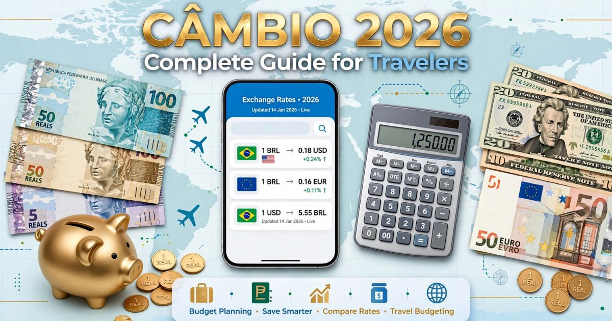

Câmbio para viajantes 2026: guia completo sobre moedas, taxas e economia
Introdução: o dinheiro certo no destino certo
Uma das maiores dúvidas dos viajantes brasileiros ao planejar uma viagem internacional é: qual a melhor forma de levar dinheiro? Comprar dólares em espécie? Usar cartão de crédito? Optar por um cartão pré-pago internacional? Ou utilizar serviços digitais como Wise, Revolut ou Nomad?
Em 2026, as opções para o viajante brasileiro são mais variadas do que nunca, mas também mais complexas. Cada alternativa tem suas vantagens, desvantagens, taxas e custos ocultos que podem fazer uma grande diferença no bolso no final da viagem. Escolher a melhor estratégia de câmbio pode economizar centenas ou até milhares de reais.
Neste guia completo sobre câmbio para viajantes, você vai entender tudo o que precisa saber para fazer a melhor escolha: quais são as principais moedas internacionais, como funciona cada método de levar dinheiro, quais são as taxas e impostos envolvidos, o que considerar ao comprar moeda estrangeira e as melhores estratégias para economizar em cada destino.
Nosso objetivo é que você viaje com tranquilidade financeira, sabendo que está fazendo as melhores escolhas para o seu bolso. Afinal, uma viagem internacional já é cara por si só — não deixe que taxas e câmbios desfavoráveis tornem seu orçamento ainda mais apertado.
Principais moedas internacionais para viajantes
Antes de falar sobre como levar dinheiro, é importante conhecer as moedas que você encontrará nos principais destinos turísticos:
Dólar Americano (USD) — A moeda mais importante do mundo e a mais aceita internacionalmente. Utilizada nos Estados Unidos, também é aceita em diversos países como moeda paralela (especialmente em destinos turísticos da América Latina e Caribe). O dólar é a moeda de referência para o câmbio no Brasil, sendo a base para a cotação de outras moedas.
Euro (EUR) — Moeda oficial de 20 países da União Europeia, incluindo França, Alemanha, Itália, Espanha, Portugal, Holanda, Bélgica, Grécia e Áustria. O euro é a segunda moeda mais negociada do mundo e uma das mais estáveis.
Libra Esterlina (GBP) — Moeda do Reino Unido (Inglaterra, Escócia, País de Gales e Irlanda do Norte). É uma das moedas mais fortes e valorizadas do mundo, com cotação geralmente acima do dólar e do euro.
Peso Argentino (ARS) — Moeda da Argentina, um dos destinos mais procurados por brasileiros. O peso argentino sofre com forte desvalorização e inflação, exigindo atenção redobrada na hora da compra.
Real (BRL) — Nossa moeda local, utilizada para comprar moedas estrangeiras. O valor do real frente às moedas internacionais é o principal fator que impacta o custo da viagem.
Outras moedas importantes:
- Dólar Canadense (CAD) — Utilizado no Canadá.
- Dólar Australiano (AUD) — Utilizado na Austrália e em alguns países do Pacífico.
- Iene Japonês (JPY) — Moeda do Japão.
- Franco Suíço (CHF) — Moeda da Suíça, uma das mais valorizadas.
- Peso Mexicano (MXN) — Utilizado no México.
Dica: Em muitos destinos, especialmente na América Latina e em países da Ásia, o dólar americano é aceito paralelamente à moeda local. Tenha sempre alguns dólares em espécie para emergências.

Conheça as principais moedas internacionais para sua viagem
Como levar dinheiro para o exterior
Existem diversas formas de levar dinheiro para uma viagem internacional. Cada método tem suas vantagens e desvantagens, e a melhor estratégia é combinar diferentes opções para maximizar a segurança e minimizar custos.
1. Dinheiro em espécie (dólar/euro) — O método mais tradicional e ainda muito utilizado. Comprar moeda estrangeira em espécie é prático e não envolve taxas adicionais no exterior. No entanto, o risco de perda ou roubo é elevado, e você não tem proteção contra extravios.
2. Cartão de crédito internacional — A forma mais conveniente de pagamento no exterior. Aceito em praticamente todos os estabelecimentos, o cartão de crédito oferece segurança (bloqueio em caso de perda ou roubo) e praticidade. No entanto, as taxas de câmbio e o IOF (6,38%) podem tornar a opção mais cara.
3. Cartão pré-pago internacional — Cartões recarregáveis em moeda estrangeira (dólar/euro). Funcionam como um cartão de débito internacional, com a vantagem de você "travar" a cotação no momento da recarga. As taxas são menores que as do cartão de crédito, mas há tarifas de recarga e manutenção.
4. Contas digitais internacionais (Wise, Nomad, Revolut) — Uma das opções mais modernas e econômicas. Essas fintechs oferecem contas em moeda estrangeira com conversão a taxas muito competitivas (próximas ao câmbio comercial). O IOF é reduzido para operações de câmbio (1,1% ao invés de 6,38%). Permitem saques em ATM e pagamentos com cartão.
5. Transferências bancárias internacionais — Ideal para quem precisa de valores elevados, como pagamento de aluguel ou compra de imóvel. As taxas são altas e o processo é burocrático, não sendo recomendado para turistas.
6. Combinação estratégica — A melhor estratégia é combinar diferentes métodos. Por exemplo: levar uma parte em espécie para despesas imediatas, um cartão pré-pago como reserva e usar o cartão de crédito para compras maiores. Assim, você tem segurança, praticidade e economia.
Cartões pré-pagos internacionais: como funcionam
Os cartões pré-pagos internacionais são uma das melhores alternativas para levar dinheiro para o exterior. Entenda como eles funcionam:
O que são? — São cartões recarregáveis em moeda estrangeira (dólar ou euro) que funcionam como um cartão de débito internacional. Você carrega o cartão com a moeda estrangeira antes da viagem e utiliza como um cartão normal no exterior.
Vantagens:
- Trava a cotação — Ao recarregar, você garante o câmbio daquele dia, protegendo-se contra variações futuras da moeda.
- IOF reduzido — O IOF para cartões pré-pagos é de 1,1%, contra 6,38% do cartão de crédito.
- Segurança — Em caso de perda ou roubo, você pode bloquear o cartão rapidamente pelo aplicativo.
- Controle de gastos — Você só gasta o que carregou no cartão, evitando surpresas na fatura.
- Aceitação global — Aceitos em milhões de estabelecimentos e caixas eletrônicos (ATMs) ao redor do mundo.
Desvantagens:
- Taxas de recarga — Cada recarga tem uma tarifa, geralmente em torno de 1% a 3% do valor.
- Taxas de manutenção — Alguns cartões cobram tarifa mensal ou anual.
- Taxas de saque — Saques em ATM geralmente têm taxas adicionais.
- Limite de recarga — Alguns cartões têm limite máximo de saldo.
Principais opções no mercado brasileiro:
- Wise — Conta digital com cartão em dólar, euro e outras moedas. Taxas de câmbio baixas e IOF de 1,1%. Permite saques em ATM.
- Nomad — Conta em dólar com cartão internacional. Ideal para viagens aos Estados Unidos. Taxas competitivas e aplicativo intuitivo.
- Revolut — Conta digital global com cartão em várias moedas. Oferece planos grátis e pagos com benefícios extras.
- C6 Bank — Oferece cartão pré-pago em dólar com recarga via aplicativo.
- Inter — Conta global em dólar com cartão internacional e taxa de câmbio competitiva.
- Santander — Cartão pré-pago em dólar e euro com recarga em agências e aplicativo.
Taxas e impostos no câmbio: o que você precisa saber
As taxas e impostos são os grandes vilões do câmbio para viajantes. Conhecer cada um deles é o primeiro passo para economizar.
IOF (Imposto sobre Operações Financeiras):
- Cartão de crédito (compra internacional): 6,38%
- Cartão pré-pago (recarga em moeda estrangeira): 1,1%
- Compra de moeda em espécie (dólar/euro): 0,38%
- Transferências internacionais (remessa): 1,1%
- Conta digital internacional (Wise, Nomad): 1,1%
Spread bancário (diferença entre compra e venda):
- É a diferença entre a cotação do dólar comercial e o valor cobrado na venda de moeda estrangeira.
- Na compra de moeda em espécie, o spread pode chegar a 10% ou mais.
- Em operações com cartões pré-pagos e contas digitais, o spread é geralmente menor (em torno de 1% a 2%).
Taxas de saque em ATM:
- Bancos no exterior cobram taxas para saques com cartões estrangeiros, que variam de US$ 2 a US$ 5 por saque.
- Alguns cartões pré-pagos oferecem saques gratuitos em determinados ATM.
Taxas de conversão de moeda:
- Cartões de crédito aplicam a taxa de câmbio do dia (geralmente a do banco emissor).
- Contas digitais como Wise e Nomad aplicam taxas muito próximas ao câmbio comercial.
Melhor momento para comprar moeda estrangeira
O timing da compra de moeda estrangeira pode fazer uma grande diferença no valor gasto. Confira as principais estratégias:
Compre com antecedência — O ideal é começar a comprar moeda estrangeira com 2 a 3 meses de antecedência, aproveitando as baixas do dólar. Isso permite diluir o risco de variação cambial.
Evite comprar em alta — Monitore a cotação do dólar e compre quando a moeda estiver em baixa ou estável. Evite comprar em períodos de pico (como véspera de feriados ou crises políticas).
Use ferramentas de alerta — Aplicativos como Wise, Nomad e Google Finance permitem configurar alertas para ser notificado quando a moeda atingir um valor favorável.
Compre aos poucos — Uma estratégia interessante é comprar parcelas ao longo do tempo, especialmente em viagens longas, para aproveitar diferentes cotações.
Estratégia para diferentes moedas:
- Dólar: Períodos de incerteza política e econômica tendem a baixar o dólar.
- Euro: A moeda europeia é mais estável, mas também pode ser influenciada por crises na União Europeia.
- Libra: A moeda britânica é influenciada pelo desempenho da economia do Reino Unido.
Dicas de economia no câmbio
Para economizar no câmbio e aproveitar melhor a sua viagem, siga estas dicas práticas:
- Compare as opções — Pesquise as taxas de diferentes casas de câmbio, bancos e aplicativos antes de comprar. As diferenças podem ser significativas.
- Prefira cartões pré-pagos — O IOF é menor (1,1% contra 6,38%) e as taxas de conversão são mais competitivas.
- Evite comprar moeda em espécie em aeroportos — As taxas são as mais altas do mercado. A menos que seja uma emergência, evite.
- Use cartões sem taxas de saque — Alguns cartões pré-pagos oferecem saques gratuitos ou com taxas reduzidas.
- Pague em moeda local — Quando oferecido, escolha pagar em moeda local (ao invés de reais) para evitar a conversão desfavorável da operadora do cartão.
- Mantenha um valor em espécie — Tenha sempre uma quantia em moeda local ou dólar para emergências.
- Acompanhe a cotação — Use aplicativos para monitorar a variação do câmbio antes da viagem.
Erros comuns no câmbio e como evitá-los
Mesmo viajantes experientes cometem erros na hora de lidar com câmbio. Conheça os mais comuns e evite-os:
- Comprar moeda em espécie em aeroportos — As taxas são as mais altas do mercado. Compre com antecedência em casas de câmbio ou bancos.
- Usar cartão de crédito sem saber a taxa de câmbio aplicada — As operadoras aplicam taxas de câmbio desfavoráveis. Confira as condições antes de usar.
- Levar todo o dinheiro em espécie — Além do risco de perda ou roubo, você perde a praticidade dos cartões e a segurança das contas digitais.
- Esquecer de considerar o IOF e as taxas bancárias — O valor final da compra de moeda estrangeira é sempre maior que a cotação do dólar. Calcule com antecedência.
- Não acompanhar a cotação antes da viagem — Comprar no pico pode encarecer significativamente a viagem.
- Não ter cartão de reserva — Em caso de perda ou roubo do cartão principal, é importante ter uma opção alternativa.
A melhor estratégia é a diversificação! Combine dinheiro em espécie, cartão pré-pago e cartão de crédito. Leve uma parte em espécie para despesas imediatas, o cartão pré-pago para a maior parte dos gastos e o cartão de crédito como reserva. Assim, você minimiza riscos, reduz taxas e tem sempre uma opção disponível. Além disso, antes de viajar, informe-se sobre a aceitação de cartões no destino para evitar surpresas.
❓ Perguntas Frequentes sobre câmbio para viajantes
A melhor estratégia é combinar diferentes métodos: uma parte em espécie para despesas imediatas, um cartão pré-pago para a maior parte dos gastos (com IOF reduzido de 1,1%) e um cartão de crédito como reserva. Isso oferece segurança, economia e praticidade.
O IOF varia conforme o método: cartão de crédito (6,38%), cartão pré-pago (1,1%), compra em espécie (0,38%) e contas digitais como Wise/Nomad (1,1%). O cartão pré-pago e as contas digitais são as melhores opções para reduzir o IOF.
Depende. O dólar em espécie é prático e não tem taxas de saque, mas o IOF é de 0,38% e o spread bancário costuma ser mais alto. O cartão pré-pago tem IOF de 1,1%, mas spread menor e maior segurança. A melhor opção é levar uma parte em espécie e o restante no cartão pré-pago.
Sim. Todas essas fintechs são regulamentadas e seguem padrões rigorosos de segurança. O dinheiro depositado nessas contas tem proteção contra falência da instituição, e os cartões podem ser bloqueados remotamente em caso de perda ou roubo.
Em países com moedas próprias (como Argentina, Chile, Japão, Austrália), você pode comprar a moeda local no Brasil (em casas de câmbio especializadas) ou fazer a conversão no destino, utilizando dólares para trocar pela moeda local. O cartão de crédito e o pré-pago também são aceitos, com conversão automática.
O melhor momento é quando a moeda estiver em baixa ou estável. Acompanhe a cotação com antecedência (2 a 3 meses) e compre quando o dólar/euro estiver em um patamar confortável. Evite comprar em períodos de pico (véspera de feriados ou crises econômicas).
Sempre pague em moeda local! Quando você escolhe pagar em reais, a operadora do cartão aplica uma taxa de conversão desfavorável. Pagar em moeda local garante o câmbio da sua instituição financeira, que geralmente é mais vantajoso.
O valor em espécie depende do destino e do seu perfil de gastos. Como recomendação geral, leve entre US$ 200 e US$ 500 em espécie para despesas imediatas (transporte, alimentação, pequenas compras). Use cartões para o restante.
Na maioria dos países, sim, especialmente os destinos turísticos. No entanto, em países como Alemanha, Holanda e Suíça, o uso de dinheiro em espécie ainda é comum, especialmente em estabelecimentos menores. Verifique com antecedência a aceitação de cartões no destino.